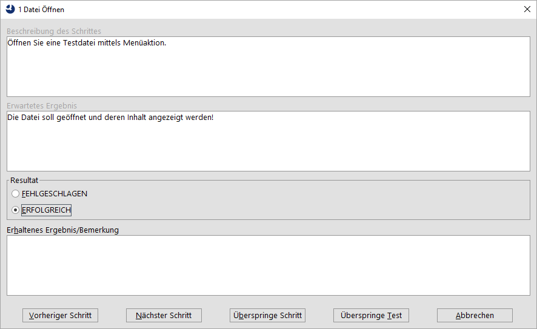

| Version 6.0.3 |
QF-Test ist in erster Linie ein Werkzeug, das GUI Tests erstellt und automatisiert auszuführt. Jedoch ist es nicht immer möglich - oder wirtschaftlich - die Tests vollständig zu automatisieren, deshalb gibt es in neben dem automatisierten Testen auch manuelle Testfälle, die auszuführen sind. Eine der größten Herausforderungen in Testprojekten ist die gemeinsame Aufbereitung der automatisierten und manuellen Testergebnisse. Eine solche gemeinsame Aufbereitung ist sehr nützlich, um einen Gesamtüberblick über die Testausführung zu erhalten. QF-Test bietet nun die Möglichkeit Ergebnisse von manuellen und auch von automatisierten Tests gemeinsam anzuzeigen.
Die Schritte eines manuellen Tests müssen hierfür an einer bestimmten
Stelle definiert werden. Der ManualTestRunner von QF-Test
liefert hierfür eine Excel Datei. Diese Testsuite sowie eine
beispielhafte Excel Datei finden Sie im Verzeichnis
demo/manualtester im QF-Test Installationsverzeichnis.
Der Testdesigner muss nun die einzelnen Schritte des Tests in
der Excel Datei definieren, inklusive des erwarteten Ergebnisses. Nach
Ausführung des manuellen Tests von QF-Test aus, liefert QF-Test sowohl
das Protokoll als auch HTML-Report und zusätzlich noch eine neue
Excel Datei, die die entsprechenden Ergebnisse beinhaltet.
Für eine genauere Beschreibung siehe Abschnitt 30.2.
Der Dialog zur Testausführung, der ManualStepDialog, sieht wie folgt aus:
|
|  | ||
|
| Abbildung 30.1: Beispiel für einen ManualStepDialog | ||
Der Titel des Dialoges beinhaltet den Namen des Testfalles. Die ersten zwei Textfelder enthalten die Beschreibung des manuellen Schrittes sowie das erwartete Ergebnis. Nach Ausführung des Testschrittes muss der Tester nun angeben, ob dieser erfolgreich war oder nicht. Falls der Testschritt nicht erfolgreich gewesen sein sollte, so muss der Tester ein erhaltenes Ergebnis dokumentieren. Sie können diesen Dialog auch für Ihre eigenen Ansätze verwenden, siehe Abschnitt 53.1.
Bitte führen Sie folgende Schritte auf dem System aus, wo Sie einen manuellen Test von QF-Test aus starten:
qftest-6.0.3/demo/manualtester/SampleTestDescription.xlsx
in ein projektspezifisches Verzeichnis. Wie empfehlen auf jedem Testsystem
den selben Pfad zu verwenden, vielleicht ein Netzlaufwerk.
qftest-6.0.3/demo/manualtester/ManualTestRunner.qft in
ein projektspezifisches Verzeichnis. Womöglich sollten Sie diese auch umbenennen.
testFile
anpassen, um die projektspezifische Excel Datei einzulesen.
Bitte beachten Sie auch die Kommentare in der Ausführungstestsuite und in der Excel Datei. Sie können dieses Konzept natürlich auch an Ihre eigenen Anforderungen anpassen und sogar nur bestimmte Tests starten.
Die Excel Datei hat eine bestimmte Struktur, um einen manuellen Testfall so flexibel wie möglich zu beschreiben. Hier folgt eine genauere Beschreibung der einzelnen Spalten:
|
|
|
||||||||||||||||
|
| Tabelle 30.1: Beschreibung der Excel Datei für die Testdefinition | ||||||||||||||||
Die Excel Datei, welche dann die Ergebnisse der manuellen Testausführung beinhaltet, hat noch zwei zusätzliche Spalten:
|
|
|
||||||||
|
| Tabelle 30.2: Beschreibung der Excel Datei für die Testergebnisse | ||||||||
Die Ausführungstestsuite ManualTestRunner.qft beinhaltet ein paar
globale Variablen, um die Ausführung zu steuern. Variablen, die hier
nicht aufgeführt werden, werden von der Testsuite intern genutzt und
sollten nicht verändert werden. Hier folgt eine Beschreibung
dieser Variablen:
|
|
|
||||||||||||||||||||||||||||
|
| Tabelle 30.3: Beschreibung der globalen Variablen in der ManualTestRunner Testsuite | ||||||||||||||||||||||||||||
Ausgeführte Testschritte können auf folgende Zustände gesetzt werden:
|
|
|
||||||||||||
|
| Tabelle 30.4: Mögliche Zustände der manuellen Testausführung | ||||||||||||
| Letzte Änderung: 6.9.2022 Copyright © 1999-2022 Quality First Software GmbH |